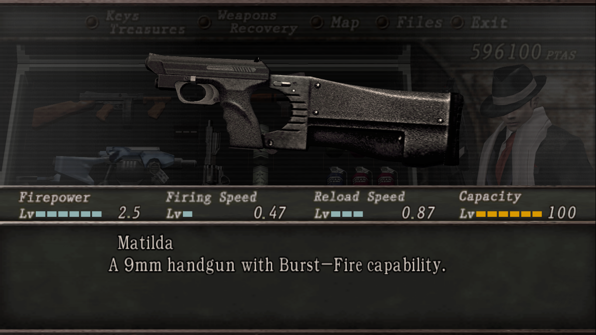
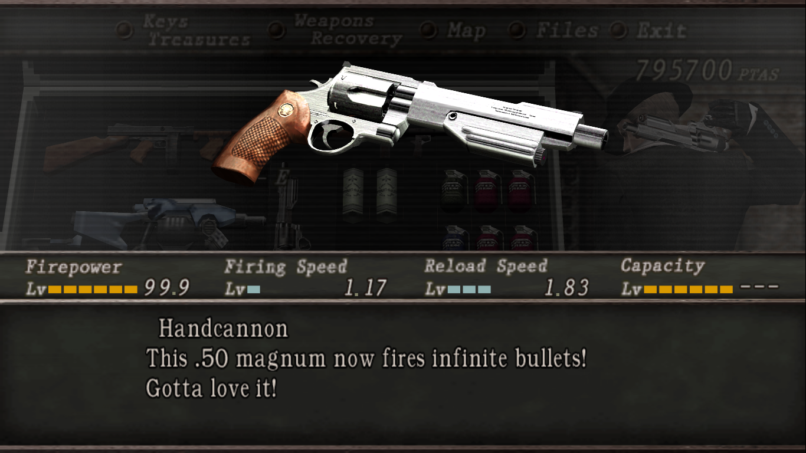
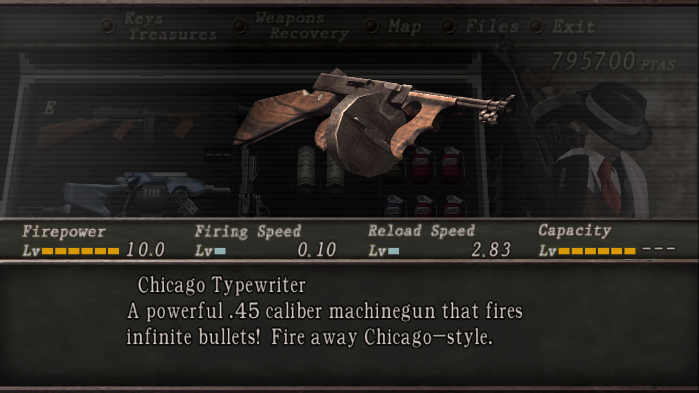
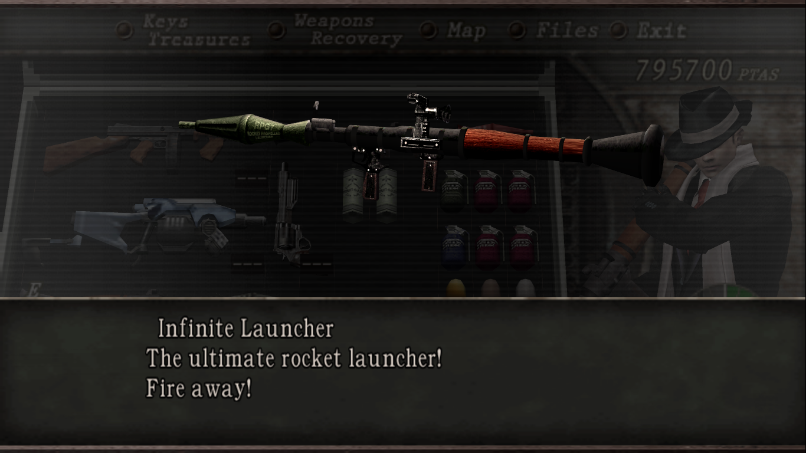
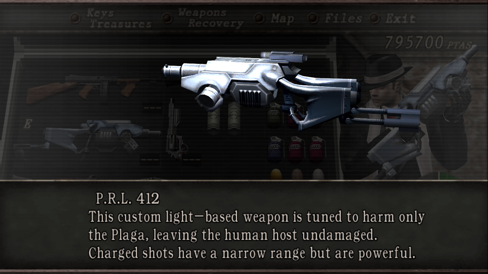

Tentang Resident Evil 4
Resident Evil 4 adalah game survival horror yang dikembangkan oleh Capcom, dirilis pada tahun 2005. Dalam game ini, pemain mengendalikan Leon S. Kennedy, seorang agen pemerintah yang ditugaskan untuk menyelamatkan putri presiden, Ashley Graham, yang diculik oleh sebuah kultus misterius di Eropa. Game ini dikenal dengan gameplay yang inovatif, grafis yang mengesankan, dan atmosfer yang menegangkan.
Senjata-Senjata Rahasia di Resident Evil 4
Matilda
Matilda adalah pistol semi-otomatis dengan mode burst-fire yang menembakkan tiga peluru sekaligus. Ini sangat efektif untuk musuh berjarak dekat dan menengah, tetapi bisa cepat menghabiskan amunisi. Untuk mendapatkan senjata ini cukup mudah, player hanya perlu menyelesaikan story mode dalam level kesulitan easy, setelah tamat player akan mendapatkannya dan harus membeli di the merchant seharga 70.000 PTAS, dimana PTAS adalah mata uang dalam game ini.
Handcannon
Handcannon adalah revolver mematikan dengan daya hancur yang luar biasa. Senjata ini memiliki peluru tak terbatas setelah di-upgrade sepenuhnya. Dibanding dengan senjata yang lain, Handcannon adalah senjata tersulit untuk di dapatkan di game ini, karena cara mendapatkannya harus menyelesaikan mode extra yaitu mode the mercenaries dan harus mendapatkan bintang 5 di setiap stage dan di setiap karakternya. Senjata ini gratis di the merchant, ya benar harganya 0 PTAS.
Chicago Typewriter
Selanjutnya adalah Chicago Typewriter, senjata ini adalah senjata otomatis dengan amunisi tak terbatas. Ini adalah salah satu senjata yang paling mematikan di Resident Evil 4, sebab bukan cuma peluru yang tak terbatas tapi senjata ini di bekali dengan keceatan menembak yang sangat cepat dan juga kerusakan yang di timbulkan dari senjata ini jika terkena musuh. Dan cara menadapatkan senjata ini yaitu dengan cara menyelesaikan mode extra Separate Ways. Untuk harganya senjata ini di hargai 1.000.000 PTAS yang menjadikan senjata ini menjadi senjata yang paling mahal di bandingkan yang lain.
Infinite Rocket Launcher
Infinite Rocket Launcher dapat membunuh musuh besar dalam satu tembakan dengan amunisi tak terbatas. Senjata ini membuat pertempuran bos menjadi jauh lebih mudah. Cara mendapatkan senjata ini sangat mudah karena caranya sama seperti senjata Matilda, ya benar hanya dengan menyelesaikan story mode dalam mode easy atau normal saja. Dan untuk harganya senjata ini di hargai 1.000.000 PTAS yang menjadikan senjata termahal juga selain Chicago Typewriter
P.R.L. 412
P.R.L. 412 adalah senjata laser kuat yang dirancang untuk menghancurkan parasit Las Plagas dengan cepat dan efektif. Senjata ini bisa menargetkan banyak musuh dalam sekali serangan, yang menjadikan senjata ini adalah senjata terkuat di game Resident Evil 4. Cara mendapatkannya cukup sulit karena player akan di wajibkan menyelesaikan story mode dalam mode professional untuk mendapatkan senjata ini. Untuk harga dari senjata ini adalah 0 PTAS, betul sekali senjata ini gratis di untuk di dapatkan dan tidak perlu upgrade lagi setelah membelinya dengan gratis.